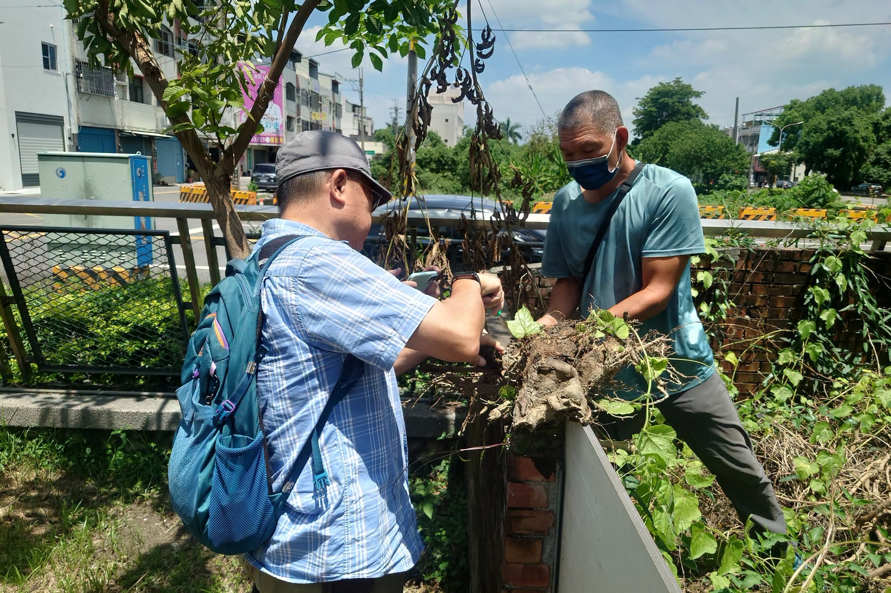
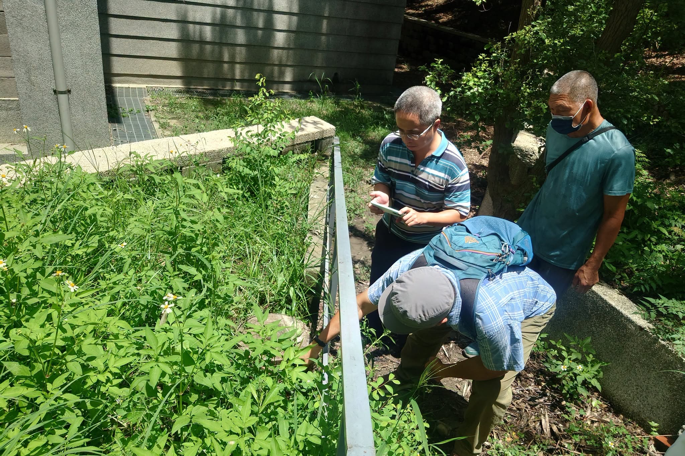

To protect the health of every tree on campus and ensure the safety of students and staff, Hsinmin Elementary recently invited a team of experts to conduct a thorough tree health inspection. The visit followed a recent incident in which a roadside tree near the school fell over, prompting the school to take proactive steps to assess any potential risks.
The inspection team included Dr. Yen Chih-heng from the College of Agriculture and Natural Resources at National Chung Hsing University, Ms. Chen Yi-wen from the Changhua County Government Education Department, and Mr. Chang Yu-chieh from the Agriculture Department. Together with the school's General Affairs Office and grounds staff, they walked through the entire campus — carefully inspecting the site of the fallen tree as well as every other tree on school grounds. Each tree was assessed for its health, growth condition, and potential risks, and the team provided professional advice on ongoing care and pest management.
The trees on our campus are far more than scenery — they provide shade, support environmental education, and protect local biodiversity. Hsinmin Elementary is committed to regular tree inspections and professional care, so that every student and teacher can learn and teach in a truly safe, healthy, and beautiful school environment. 🌳
🌳【守護校園綠樹，共同打造安全學習環境】🌳
為持續維護校園樹木健康及師生安全，因應先前校園周邊路樹傾倒事件，本校特別邀請相關學者專家到校進行全校樹木的健康檢查與風險評估。
感謝中興大學農業暨自然資源學院顏志恒博士、彰化縣政府教育處陳怡玟老師及農業處張于傑先生蒞校指導，與本校總務處及校工同仁一同巡視校園，針對先前路樹傾倒位置及校園內樹木逐一檢視，從樹木健康、生長狀況到潛在風險進行專業評估，並提供後續養護及病蟲害防治建議。
校園中的每一棵樹，不僅是孩子們成長的美麗風景，更肩負著遮蔭、環境教育與生態保育的重要角色。新民國小將持續落實校園樹木巡檢與養護工作，以專業管理守護校園綠意，提供師生更加安全、健康、優質的學習環境。
💚 用心守護每一棵樹，安心陪伴每一位孩子成長。
Words About Trees & Safety英語學習角 · 和樹木與安全有關的小單字
Six key words from this story, each with an example sentence — then a five-question quiz. Tap 🔊 to listen.
六個關鍵字，每個字配一個例句，最後有五題小考。點 🔊 聽發音。
情境：兩位同學聊到他們在校園看到的樹木健康檢查。